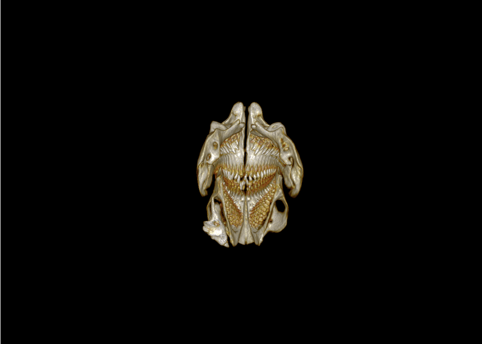

CT Scans
This gif shows a 360 degree view of the jaws of the rabbitfish, Siganus rivulatus, the images composing this gif were constructed in 3Dslicer.
This animation is an aproximation of the movement of the jawbones of Chromis ovalis as the mouth opens and closes. These bones were segmented in 3Dslicer from the full scan of the Chromis ovalis skull shown below, the bones were then animated using blender.
 CT scan of the head of the Damselfish Chromis ovalis
CT scan of the head of the Damselfish Chromis ovalis